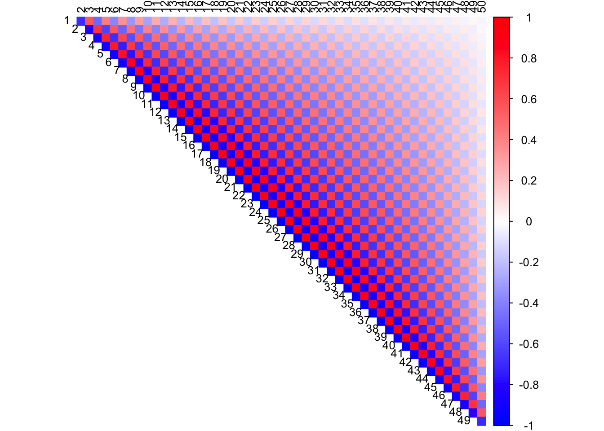
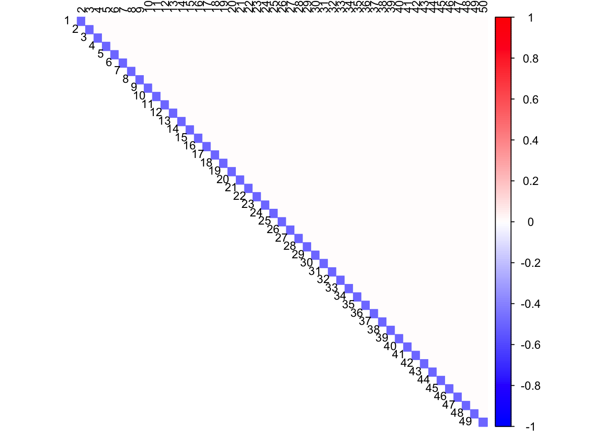
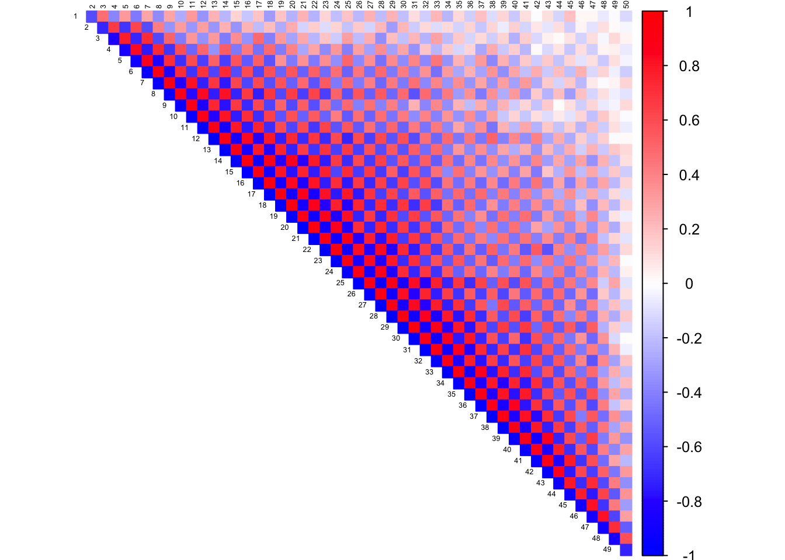
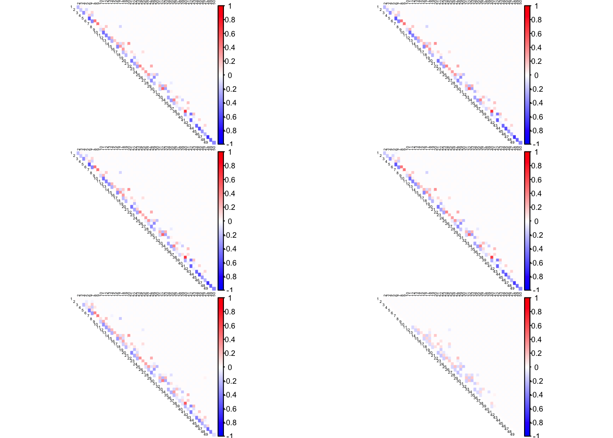
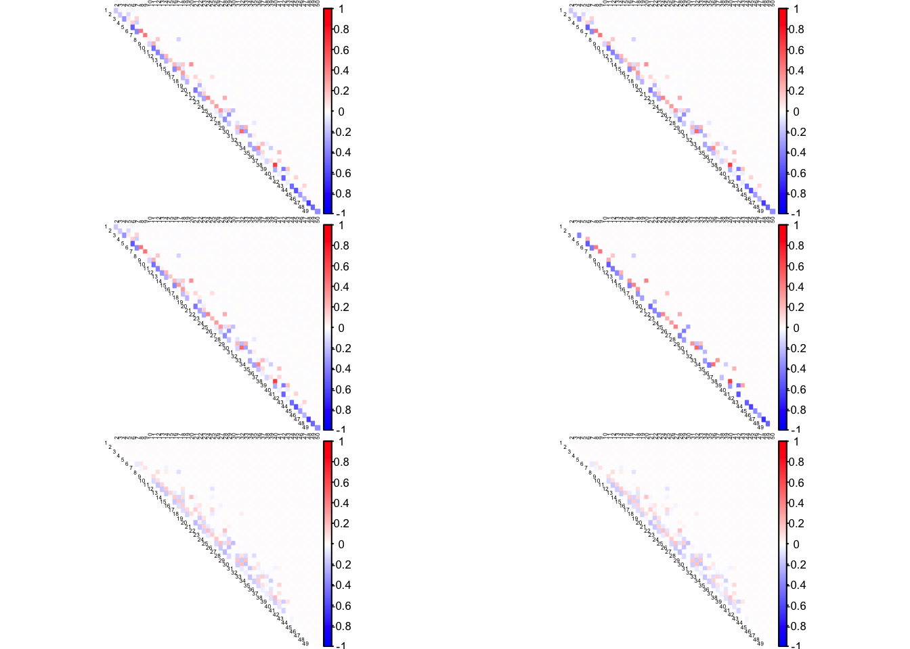

Last updated: 2019-01-15
workflowr checks: (Click a bullet for more information) ✖ R Markdown file: uncommitted changes
The R Markdown is untracked by Git. To know which version of the R Markdown file created these results, you’ll want to first commit it to the Git repo. If you’re still working on the analysis, you can ignore this warning. When you’re finished, you can run wflow_publish to commit the R Markdown file and build the HTML.
✔ Environment: empty
Great job! The global environment was empty. Objects defined in the global environment can affect the analysis in your R Markdown file in unknown ways. For reproduciblity it’s best to always run the code in an empty environment.
✔ Seed:
set.seed(20190114)
The command set.seed(20190114) was run prior to running the code in the R Markdown file. Setting a seed ensures that any results that rely on randomness, e.g. subsampling or permutations, are reproducible.
✔ Session information: recorded
Great job! Recording the operating system, R version, and package versions is critical for reproducibility.
✔ Repository version: b23c904
wflow_publish or wflow_git_commit). workflowr only checks the R Markdown file, but you know if there are other scripts or data files that it depends on. Below is the status of the Git repository when the results were generated:
Ignored files:
Ignored: .DS_Store
Ignored: .Rproj.user/
Untracked files:
Untracked: analysis/corshrink_lowrank.Rmd
Untracked: analysis/corshrink_lowrank_sim.Rmd
Untracked: analysis/icorshrink2_test_banded_precision.Rmd
Untracked: analysis/icorshrink2_test_hub.Rmd
Untracked: analysis/icorshrink2_test_toeplitz.Rmd
Untracked: analysis/icorshrink_test_banded_precision.Rmd
Untracked: analysis/icorshrink_test_hub.Rmd
Untracked: analysis/icorshrink_test_toeplitz.Rmd
Untracked: analysis/test_icorshrink_PLIN1.Rmd
Untracked: docs/figure/
library(MASS)
library(Matrix)
library(corrplot)corrplot 0.84 loadedlibrary(CorShrink)
library(corpcor)
library(scales)
library(gridExtra)
library(ggplot2)
library(CVXR)
Attaching package: 'CVXR'The following object is masked from 'package:MASS':
huberThe following object is masked from 'package:stats':
powerband.mat <- function(a, p, K=1, permu=c(1:p)){
ones = rep(1,p)
Omega0 = a*ones%*%t(ones)
diag(Omega0) = rep(1,p)
Omega = 1*band(Omega0,-K,K)
Sigma = qr.solve(Omega)
Sigma = Sigma*(abs(Sigma)>1e-4)
Sigma.half=chol(Sigma)
Sigma.half = Sigma.half*(abs(Sigma.half)>1e-4)
Sigma = Sigma[permu,permu]
Omega = Omega[permu,permu]
Sigma.half = Sigma.half[permu,permu]
obj = list(Sigma=Sigma, Omega = Omega, Sigma.half = Sigma.half)
}
make.data <- function(Sigma.half, n, p, seed){
set.seed(seed)
X = matrix(rnorm(n*p),n,p)%*%Sigma.half
return(X)
}Population correlation matrix
n = 500
p = 50
obj = band.mat(a=0.5, p, K = 1)
Sig.half = obj$Sigma.half
Ome.true = obj$Omega
X.mat = make.data(Sig.half, n, p, seed = 1000)
corSigma <- cov2cor(obj$Sigma)
col2 <- c("blue", "white", "red")
corrplot(as.matrix(corSigma), diag = FALSE, col = colorRampPalette(col2)(200), tl.pos = "td",
tl.col = "black", tl.cex = 0.8, rect.col = "white",
na.label.col = "white", method = "color", type = "upper")
Population partial correlation matrix.
pcorSigma <- -as.matrix(cov2cor(obj$Omega))
diag(pcorSigma) <- rep(1, dim(pcorSigma)[1])
col2 <- c("blue", "white", "red")
corrplot(pcorSigma, diag = FALSE, col = colorRampPalette(col2)(200), tl.pos = "td",
tl.col = "black", tl.cex = 0.8, rect.col = "white",
na.label.col = "white", method = "color", type = "upper")
data_with_missing = apply(X.mat, c(1, 2), function(x) {
if(runif(1,0,1) < 0.5){
y = NA
}else{
y = x
}
return(y)
})Pairwise sample correlation estimate
cor2 = cor(data_with_missing, use = "pairwise.complete.obs")
col2 <- c("blue", "white", "red")
corrplot(as.matrix(cor2), diag = FALSE,
col = colorRampPalette(col2)(200),
tl.pos = "td", tl.cex = 0.4, tl.col = "black",
rect.col = "white",na.label.col = "white",
method = "color", type = "upper")
## iCorSrhink estimate
alphas <- c(0.0001, 0.001, 0.01, 0.1, 1, 10)
Partial.est <- lapply(alphas,
function(alpha) {
out = iCorShrink2Data(data_with_missing, alpha = alpha)
})The relative error in estimated Inverse correlation matrix between last two runs is 1.225118
The relative error in estimated Inverse correlation matrix between last two runs is 4.73478e-06
Finished iterations!The relative error in estimated Inverse correlation matrix between last two runs is 1.226211
The relative error in estimated Inverse correlation matrix between last two runs is 4.634726e-05
Finished iterations!The relative error in estimated Inverse correlation matrix between last two runs is 1.24499
The relative error in estimated Inverse correlation matrix between last two runs is 0.0005050677
Finished iterations!The relative error in estimated Inverse correlation matrix between last two runs is 1.436175
The relative error in estimated Inverse correlation matrix between last two runs is 0.00495411
The relative error in estimated Inverse correlation matrix between last two runs is 0.0002103006
Finished iterations!The relative error in estimated Inverse correlation matrix between last two runs is 3.384439
The relative error in estimated Inverse correlation matrix between last two runs is 0.04742025
The relative error in estimated Inverse correlation matrix between last two runs is 0.003037198
The relative error in estimated Inverse correlation matrix between last two runs is 0.000788479
Finished iterations!The relative error in estimated Inverse correlation matrix between last two runs is 18.98298
The relative error in estimated Inverse correlation matrix between last two runs is 0.170955
The relative error in estimated Inverse correlation matrix between last two runs is 0.01688121
The relative error in estimated Inverse correlation matrix between last two runs is 0.006017604
The relative error in estimated Inverse correlation matrix between last two runs is 0.003098932
The relative error in estimated Inverse correlation matrix between last two runs is 0.002666134
The relative error in estimated Inverse correlation matrix between last two runs is 0.002448688
The relative error in estimated Inverse correlation matrix between last two runs is 0.001558737
The relative error in estimated Inverse correlation matrix between last two runs is 0.001128604
The relative error in estimated Inverse correlation matrix between last two runs is 0.000487015
Finished iterations!frob_dist = c()
for (m in 1:6){
frob_dist[m] = mean((Partial.est[[m]] - pcorSigma)^2)
}par(mfrow=c(3,2))
for(m in 1:6){
corrplot(as.matrix(cov2cor(Partial.est[[m]])), diag = FALSE,
col = colorRampPalette(col2)(200),
tl.pos = "td", tl.cex = 0.4, tl.col = "black",
rect.col = "white",na.label.col = "white",
method = "color", type = "upper")
}
frob_dist[1] 0.007178251 0.007178231 0.007176686 0.007168359 0.007320620 0.008732351expos = c(1e-05, 0.001, 0.05, 1, 2, 10)
alpha = 0.1
Partial.est <- lapply(expos,
function(expo) {
out = iCorShrink2Data(data_with_missing, alpha = alpha, expo = expo)
})The relative error in estimated Inverse correlation matrix between last two runs is 1.436175
The relative error in estimated Inverse correlation matrix between last two runs is 0.001426424
The relative error in estimated Inverse correlation matrix between last two runs is 2.073433e-08
Finished iterations!The relative error in estimated Inverse correlation matrix between last two runs is 1.436175
The relative error in estimated Inverse correlation matrix between last two runs is 0.001331429
The relative error in estimated Inverse correlation matrix between last two runs is 4.973644e-06
Finished iterations!The relative error in estimated Inverse correlation matrix between last two runs is 1.436175
The relative error in estimated Inverse correlation matrix between last two runs is 0.00495411
The relative error in estimated Inverse correlation matrix between last two runs is 0.0002103006
Finished iterations!The relative error in estimated Inverse correlation matrix between last two runs is 1.436175
The relative error in estimated Inverse correlation matrix between last two runs is 0.2549958
The relative error in estimated Inverse correlation matrix between last two runs is 0.06606084
The relative error in estimated Inverse correlation matrix between last two runs is 0.02777448
The relative error in estimated Inverse correlation matrix between last two runs is 0.019934
The relative error in estimated Inverse correlation matrix between last two runs is 0.01574064
The relative error in estimated Inverse correlation matrix between last two runs is 0.01575056
The relative error in estimated Inverse correlation matrix between last two runs is 0.02019577
The relative error in estimated Inverse correlation matrix between last two runs is 0.02734765
The relative error in estimated Inverse correlation matrix between last two runs is 0.01058466
Finished iterations!The relative error in estimated Inverse correlation matrix between last two runs is 1.436175
The relative error in estimated Inverse correlation matrix between last two runs is 0.9895625
The relative error in estimated Inverse correlation matrix between last two runs is 0.5570413
The relative error in estimated Inverse correlation matrix between last two runs is 0.4219009
The relative error in estimated Inverse correlation matrix between last two runs is 0.269499
The relative error in estimated Inverse correlation matrix between last two runs is 0.1751302
The relative error in estimated Inverse correlation matrix between last two runs is 0.03762105
The relative error in estimated Inverse correlation matrix between last two runs is 0.01632855
The relative error in estimated Inverse correlation matrix between last two runs is 0.00762184
The relative error in estimated Inverse correlation matrix between last two runs is 0.00375941
Finished iterations!The relative error in estimated Inverse correlation matrix between last two runs is 1.436175
The relative error in estimated Inverse correlation matrix between last two runs is 6.058623
The relative error in estimated Inverse correlation matrix between last two runs is 0.5857376
The relative error in estimated Inverse correlation matrix between last two runs is 1.61488e-06
Finished iterations!frob_dist = c()
for (m in 1:6){
frob_dist[m] = mean((Partial.est[[m]] - pcorSigma)^2)
}
min(frob_dist[!is.na(frob_dist)])[1] 0.00716006par(mfrow=c(3,2))
for(m in 1:6){
corrplot(as.matrix(cov2cor(Partial.est[[m]])), diag = FALSE,
col = colorRampPalette(col2)(200),
tl.pos = "td", tl.cex = 0.4, tl.col = "black",
rect.col = "white",na.label.col = "white",
method = "color", type = "upper")
}
frob_dist[1] 0.007160060 0.007160176 0.007168359 0.008103684 0.008192218 0.008186366sessionInfo()R version 3.5.1 (2018-07-02)
Platform: x86_64-apple-darwin15.6.0 (64-bit)
Running under: macOS High Sierra 10.13.6
Matrix products: default
BLAS: /Library/Frameworks/R.framework/Versions/3.5/Resources/lib/libRblas.0.dylib
LAPACK: /Library/Frameworks/R.framework/Versions/3.5/Resources/lib/libRlapack.dylib
locale:
[1] en_US.UTF-8/en_US.UTF-8/en_US.UTF-8/C/en_US.UTF-8/en_US.UTF-8
attached base packages:
[1] stats graphics grDevices utils datasets methods base
other attached packages:
[1] CVXR_0.99-2 ggplot2_3.1.0 gridExtra_2.3 scales_1.0.0
[5] corpcor_1.6.9 CorShrink_0.1-6 corrplot_0.84 Matrix_1.2-14
[9] MASS_7.3-50
loaded via a namespace (and not attached):
[1] tidyselect_0.2.5 purrr_0.2.5 ashr_2.2-23
[4] reshape2_1.4.3 lattice_0.20-35 colorspace_1.3-2
[7] htmltools_0.3.6 yaml_2.2.0 gmp_0.5-13.2
[10] rlang_0.3.0.1 R.oo_1.22.0 pillar_1.3.0
[13] withr_2.1.2 glue_1.3.0 Rmpfr_0.7-1
[16] R.utils_2.7.0 bit64_0.9-7 bindrcpp_0.2.2
[19] scs_1.1-1 foreach_1.4.4 plyr_1.8.4
[22] bindr_0.1.1 stringr_1.3.1 munsell_0.5.0
[25] gtable_0.2.0 workflowr_1.1.1 R.methodsS3_1.7.1
[28] codetools_0.2-15 evaluate_0.12 knitr_1.20
[31] pscl_1.5.2 doParallel_1.0.14 parallel_3.5.1
[34] Rcpp_1.0.0 backports_1.1.2 truncnorm_1.0-8
[37] bit_1.1-14 digest_0.6.18 stringi_1.2.4
[40] dplyr_0.7.8 grid_3.5.1 rprojroot_1.3-2
[43] ECOSolveR_0.4 tools_3.5.1 magrittr_1.5
[46] lazyeval_0.2.1 glmnet_2.0-16 tibble_1.4.2
[49] crayon_1.3.4 whisker_0.3-2 pkgconfig_2.0.2
[52] SQUAREM_2017.10-1 assertthat_0.2.0 rmarkdown_1.10
[55] iterators_1.0.10 R6_2.3.0 git2r_0.23.0
[58] compiler_3.5.1 This reproducible R Markdown analysis was created with workflowr 1.1.1